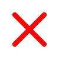

Geração 8 Bits (1983 - 1987)
Na história dos jogos eletrônicos, a terceira geração (também conhecida com a era dos 8-bits) teve início em 15 de julho de 1983, no Japão, com o lançamento simultâneo do Family Computer (chamado de NES) e do SG-1000 da SEGA. Esta geração marcou o fim do "crash" norte-americano dos video games, uma mudança no lar dominante dos video games (dos Estados Unidos para o Japão) e a transição dos gráficos baseados em blocos para uma rolagem contínua de hardware (smooth scrolling) de pontos quadriculados e gráficos baseados em sprites, que foi um salto crucial na história do design dos jogos eletrônicos.
Nintendo Entertainment System
Lançado em 1985 - 8 Bits
Nintendo Entertainment System (NES, popularmente chamado de Nintendinho) é um console lançado pela Nintendo na América do Norte, Europa, Ásia, Austrália e Brasil. Originalmente lançado no Japão em 1983 com o nome de Nintendo Family Computer, Family Computer, ou apenas Famicom, o sistema foi redesenhado e recebeu o novo nome para ser lançado no mercado americano em 1985. O NES/Famicom foi o videogame de maior sucesso comercial na sua época, ajudou a indústria de videogames a se recuperar da crise de 1983 e estabeleceu novos padrões que seriam seguidos pela indústria. Também foi o primeiro console a ser produzido por terceiros, o que ajudou a divulgar o sistema em todo o mundo.
Clássicos do NES
Super Mario Bros
(1985)
The Legend Of Zelda
(1986)
Metroid
(1986)
Castlevania
(1986)
Recomendações
Videos
Nes - História Completa
(Super Bit World)
7 Jogos indispensáveis
(Velberan)
Curiosidades do NES
(Super Bit World)
Lançado inicialmente no Japão em 1986, com o nome Sega Mark III, ele enfrentou grandes dificuldades devido à forte concorrência do NES da Nintendo. A Nintendo possuía contratos de exclusividade junto às produtoras de jogos. O contrato não permitia que elas produzissem jogos para nenhum outro aparelho, fazendo com que o Master System dependesse principalmente dos lançamentos desenvolvidos pela Sega. O baixo sucesso no Japão não evitou que a Sega lançasse o Master System no resto do mundo. Nos Estados Unidos o domínio da Nintendo também era muito grande, e logo a Sega vendeu os direitos de comercialização do Master System naquele país para a Tonka, que não conseguiu fazer um trabalho eficiente de divulgação e distribuição do console, fazendo com que a popularidade do aparelho fosse muito baixa. O fracasso do Master System nos EUA e Japão levou a Sega a grandes estratégias para fazer seu Mega Drive bem-sucedido nesses mercados (e também no Brasil e Europa).
Clássicos do Master System
Shinobi
(1987)
Phantasy Star
(1987)
Sonic the Hedgehog 2
(1992)

Alex Kidd in Miracle World
(1986)
Recomendações
Videos
Master System - História Completa
(Velberan)
7 Jogos indispensáveis
(Velberan)
Os segredos do Master System no Brasil
(The Enemy)
Atari 7800 foi um console de videogame da terceira geração lançado pela empresa Atari em junho de 1986 (um teste de mercado ocorreu dois anos antes). Desenvolvido para substituir o Atari 5200, que teve um sucesso de mercado razoável, e concorrer com os consoles Intellivision e Colecovision. O Atari 7800, foi projetado para fazer frente aos recentes rivais do Atari 5200, O Nintendo Entertainment System (NES) e o Sega Master System. Com um processador trabalhando em uma velocidade maior do que os rivais, e com um processador de áudio com 2 canais separados, o Atari 7800 possuía um desempenho maior do que o NES, inclusive com uma PPU superior ao Sega Master System que não possuía uma PPU e processava tudo pelo Z80. Porém, o que decretou o fracasso do Atari 7800, mesmo sendo superior aos concorrentes, foi o baixissímo acervo de jogos, uma vez que a maior parte das Software Houses de sucesso da época, como: Taito, Namco, Capcom e a própria Activision, responsável pelos maiores sucessos da Atari a época do Atari 2600, já possuíam contrato de exclusividade com a mais promissora empresa da época, a Nintendo.
Clássicos do Atari
Recomendações
Videos
Atari 7800 - História Completa
(Games que pariu)
Os 7 melhores gráficos do Atari 7800
(Games das Antigas)
Você Conhece Este Atari?
(Cosmic Effect)
Geração 16 Bits (1987 - 1996)
A quarta geração de consoles, conhecida como a era dos 16-bits está direcionada aos consoles lançados entre 1987 e 1996, onde se destacavam o Super Nintendo, Mega Drive e o Neo Geo . Neste período os consoles novamente receberam upgrades tanto em gráficos como nos controles, entre eles foram gráficos em 16 bits, Controles de jogo de 3 a 8 botões, Gráficos pré-renderizados, entre outros. Bora conhecer um pouco sobre cada console?
O Super Nintendo Entertainment System é o segundo console de mesa da Nintendo, sucessor do Nintendo Entertainment System (NES). O console apresentou gráficos e recursos de som avançados em comparação com outros consoles na época. Além disso, o desenvolvimento de uma variedade de chips de aprimoramento (que foram integrados em placas de circuito) ajudou a mantê-lo competitivo no mercado. Enquanto brutos gráficos tridimensionais raramente tinham sido vistos antes em consoles domésticos, utilizando o chip Super FX começando com Star Fox em 1993, o SNES foi capaz de rodar jogos com gráficos tridimensionais suaves e mais detalhados do que era anteriormente possível. Isso despertou interesse mais difundido em gráficos de polígono na indústria, ajudando a inaugurar os gráficos 3D, como pode ser visto na quinta geração de consoles de videogame.
Clássicos do SNES
Super Mario World
(1990)

The Legend Of Zelda
(1991)
Donkey Kong Country
(1994)
Top Gear (1992)
Recomendações
Videos
Super Nintendo - História Completa
(Super Bit World)
7 Jogos indispensáveis
(Velberan)
Destravado: Super Nintendo no Brasil
(The Enemy)
O Sega Genesis, conhecido como Mega Drive fora da América do Norte, é um console de videogame doméstico de quarta geração de 16 bits desenvolvido e vendido pela Sega . O Genesis é o terceiro console da Sega e o sucessor do Master System . A Sega o lançou como Mega Drive no Japão em 1988, e mais tarde como Genesis na América do Norte em 1989. Em 1990, foi distribuído como Mega Drive pela Virgin Mastertronic na Europa, Ozisoft na Australásia e Tec Toy no Brasil. Na Coreia do Sul, foi distribuído pela Samsung como Super GameBoy e mais tarde o Super Aladdin Boy.
Clássicos do Genesis
Sonic The Hedgehog (1991)
Goldem Axe (1989)
Shinobi III (1993)
Altered Beast (1988)
Recomendações
Videos
Sega Mega Drive/Genesis - História Completa
(Super Bit World)
7 Jogos indispensáveis
(Velberan)
Destravado: Mega Drive no Brasil
(The Enemy)
Neo Geo é uma família da hardware de videogames desenvolvido pela SNK. No mercado de 1990 a 2004, a marca originou-se com a liberação de um sistema arcade, o Neo Geo MVS e sua contraparte de console doméstico, o Neo Geo AES. Tanto o sistema arcade quanto o console foram poderosos para o tempo e o AES permite a compatibilidade perfeita dos jogos lançados para o MVS. No entanto, o ponto de preço elevado tanto para o console AES quanto para os seus jogos impediu-o de competir diretamente com seus contemporâneos, Sega Genesis, Super NES e TurboGrafx-16. No entanto, o arcade MVS tornou-se muito bem sucedido em lojas no Japão e na América do Norte.
Clássicos do Neo Geo
Metal Slug 2
(1998)
The King Of Fighters 98
(1998)
Samurai Shodown II
(1994)
Fatal Fury Special
(1997)
Recomendações
Videos
Neo Geo - História Completa
(Games Que Pariu)
7 Jogos indispensáveis
(Velberan)
SERÁ QUE DEU CERTO? SNK Neo Geo (Super Bit World)
O TurboGrafx-16 , conhecido como PC Engine no Japão e na França, é um console de videogame doméstico de quarta geração projetado pela Hudson Soft e vendido pela NEC Home Electronics. Foi o primeiro console comercializado na era de 16 bits, embora na realidade usasse uma CPU de 8 bits modificada. Foi lançado no Japão em 1987 e na América do Norte em 1989. O modelo japonês foi importado e distribuído na França em 1989, e o Reino Unido e a Espanha receberam uma versão baseada no modelo americano conhecido simplesmente como TurboGrafx. No Japão, o sistema foi lançado como um concorrente do Famicom, mas o atraso do lançamento nos Estados Unidos significou que ele acabou competindo com o Sega Genesis e mais tarde com o Super Nintendo Entertainment System .
Clássicos do Turbo Grafx
Recomendações
Videos
Turbo Grafx - História Completa
(Super Bit World)
7 Jogos indispensáveis
(Velberan)
7 Coisas sobre o TurboGrafx 16
(Nostalgia dos games)
Era 32 bits / 5ª Geração (1993 - 2002)
Na história dos consoles de videogame, a quinta geração (também conhecida com a era dos 32-bits, era dos 64 bits ou era 3D) compreende os consoles lançados entre os anos de 1993 e 2002, dentre os quais destacam-se o Nintendo 64, o 3DO, o Atari Jaguar, o Sega Saturn e o grande sucesso de vendas: o PlayStation, então em sua primeira versão. Essa quinta geração tinha aparelhos com processadores de 32-bit e até mesmo 64-bit, como foi o caso do Nintendo 64, e foi sucedida pela sexta geração, quando a Sega, que estava com dificuldades financeiras, lançou o primeiro console de sexta geração, o Dreamcast.
O Nintendo 64 foi um console de videogame da quinta geração lançado pela empresa japonesa Nintendo, em 23 de junho de 1996 no Japão. Nos EUA e no Brasil foi lançado simultaneamente em 29 de setembro de 1996, e em ambos os países, havia apenas dois títulos de lançamento disponíveis: Super Mario 64 e PilotWings. O console foi anunciado em 1993 com o codename "Project Reality", com plano de lançamento para arcades em 1994 e uma versão doméstica no ano seguinte. Em 1995, foi primeiramente apresentado com o nome Nintendo Ultra 64, tendo o nome reduzido para Nintendo 64 em fevereiro de 1996 (5 meses antes do lançamento). Considerado inovador na época de seu lançamento, o console era dotado de um processador gráfico projetado pela Silicon Graphics, e também contava com um processador de áudio que permitia o uso teórico de até 100 canais de áudio PCM (o que por motivos práticos nunca foi utilizado, já consumiria todos os recursos da CPU).
Clássicos do N64
Super Mario 64
(1996)
The Legend of Zelda Ocarina Of Time
(1998)
Banjo-Kazooie
(1998)
Super Smash Bros
(1999)
Recomendações
Castlevania Legacy Of Darkness
(1999)
Paper Mario
(2000)
Star Fox 64
(1997)
Videos
Nintendo 64 - História Completa
(Super Bit World)
7 Jogos indispensáveis
(Velberan)
7 Coisas sobre o Nintendo 64
(Nostalgia dos games)
O Sega Saturn foi um console de videogame da quinta geração com 32 bits, lançado pela empresa Sega em 22 de Novembro de 1994 no Japão. Meses depois foi lançado em outros países em: 11 de Maio de 1995 na América do Norte, 30 de agosto de 1995 no Brasil e, 8 de Julho na Europa. Tornou-se um console popular no Japão devido à seu marketing de sucesso, com o personagem Segata Sanshiro criado especialmente para o marketing do Sega Saturn, porém ele não conseguiu repetir o sucesso na América do Norte e Europa frente seus concorrentes, Playstation e Nintendo 64. De acordo com o artigo da revista americana GamePro em Julho de 2007, o Saturn vendeu 9,5 milhões de unidades. O console foi descontinuado na Europa e Austrália em 1998, em Abril de 1999 na América do Norte e em 23 de Dezembro de 2000 no Japão.
Clássicos do N64
Nights into Dreams...
(1996)
Sonic Jam
(1997)
Virtua Fighter 2
(1994)
Saturn Bomber Man
(1996)
Recomendações
Guardian Heroes
(1996)
Sonic R
(1997)
Virtua Cop
(1994)
Videos
Sega Saturn - História Completa
(Velberan)
7 Jogos indispensáveis
(Velberan)
Sega Saturn Vs PS1
(Joeveno)
O PlayStation frequentemente chamado de PlayStation 1 ou ainda PSOne, foi o primeiro console de vídeo game fabricado pela Sony, lançado em 3 de dezembro de 1994 no Japão, 9 de setembro de 1995 nos Estados Unidos e em 29 de setembro de 1995 na Europa. O desenvolvimento do console começou após uma parceria fracassada com a Nintendo de desenvolver um CD-ROM para seu console Super Nintendo no início dos anos 1990. A produção de jogos para o console foi projetada para ser simplificada e inclusiva, trazendo o suporte de muitos desenvolvedoras terceiras. Em julho de 2000, uma versão melhorada e mais fina chamada de PS One foi lançada, substituindo o console cinza original e nomeado apropriadamente para evitar confusão com seu sucessor, o PlayStation 2. O PlayStation introduziu a Sony para a indústria de jogos eletrônicos. O uso de CDs para o armazenamento dos jogos no console foi uma transição dos cartuchos utilizado por outras empresas de jogos. Desde o seu lançamento até 2006, quando sua produção de jogos foi interrompida, o PlayStation vendeu mais de 100 milhões de unidades. Ocupa a posição de segundo console de mesa mais vendido no mundo, com mais de cem milhões de unidades vendidas, superado apenas pelo seu sucessor, o PlayStation 2, que teve mais de 150 milhões de unidades comercializadas.
Clássicos do PS1
Crash Bandicoot
(1996)
Resident Evil
(1996)
Final Fantasy VII
(1997)
Tekken 3
(1997)
Recomendações
Lion King
(2000)
Resident Evil 2
(1998)
Tony Hawk's Pro Skater 2
(2000)
Videos
PS1 - História Completa
(TecMundo)
7 Jogos indispensáveis
(Velberan)
PS1 Vs Nintendo 64
(Joeveno)
Atari Jaguar foi um console de videogame da quinta geração com 64 bits, lançado pela empresa Flare II (Atari Corporation) em 1993, para concorrer com os consoles Mega Drive e Super Nintendo em poder de processamento. Disputou mercado com o console 3DO e posteriormente com os videogame da 5ª geração. O Jaguar foi lançado inicialmente em algumas cidades selecionadas dos Estados Unidos em novembro de 1993 e, posteriormente no resto do país em 1994. Embora promovido como um dos primeiro consoles de 64 bits, o Jaguar provou ser um fracasso comercial, e levou a Atari a abandonar o mercado de consoles domésticos. Apesar do fracasso, o Jaguar possui muitos fãs e estes produziram muitos jogos Homebrew (não-oficiais), transformando-o em um clássico.[3]
Clássicos do Jaguar
Doom
(1993)
Alien Vs. Predator
(1994)
Wolfenstein 3D
(1992)
Iron Soldier
(1994)
Recomendações
Cybermorph
(1993)
Tempest 2000
(1994)
Kassumi Ninja
(1994)
Videos
Atari Jaguar - Por que não deu certo?
(Super Bit World)
7 Jogos indispensáveis
(Velberan)
7 coisas sobre o Jaguar da Atari
(Nostalgia dos games)
3DO Interactive Multiplayer (comumente chamado de 3DO) é um console de jogos eletrônicos doméstico com arquitetura de 32 bits. O 3DO consiste em especificações técnicas criadas pela "3DO Company", que é uma sociedade entre 7 diferentes empresas. Estas especificações são de propriedade intelectual da "3DO Company" e são a parte principal para quem quiser desenvolver um console compatível com o 3DO Interactive Multiplayer. As empresas fabricantes licenciavam os direitos autorais da 3DO para fabricar um sistema baseado nas especificações da "3DO Company", e empresas de software, licenciavam o direito de desenvolver softwares (jogos e programas) para os sistemas 3DO.
Clássicos do 3DO
Samurai Shodown
(1993)
Gex
(1994)
Crash 'n Burn
(1993)
Road Rash
(1991)
Recomendações
Doom
(1993)
Return Fire
(1995)
Star Control II
(1992)
Videos
3DO - O Que Este Console Deixou para Nós?
(Velberan)
3DO Vs. PS1
(Joeveno)
7 curiosidades do console
(Nostalgia dos games)
6ª Geração (1998 - 2006)
A sexta geração (também conhecida como a era dos 128-bits) compreende alguns dos consoles lançados a partir de 1998, mais especificamente o Sega Dreamcast,[1] o PlayStation 2, o Nintendo GameCube e o Xbox. Essa sexta geração é marcada pela entrada da Microsoft no mercado dos videogames, bem como pelo fato de ser a última geração de aparelhos na qual a Sega ainda atuava na área de consoles. Atualmente, a empresa japonesa atua apenas na área de jogos eletrônicos. Foi sucedida pela sétima geração, quando a Nintendo consegue ampliar de modo considerável sua participação no mercado com seu Nintendo Wii.